@Tracker is a small Activity Time Tracker used to record time spent in various tasks. The target audience are users in need of tracking time spent in f.ex. project related tasks in their daily job.
Tracking the time is as easy as hitting a button, setting a date, setting time spent, describing what was done and then adding the task to a category.
Some features of @Tracker:
Installation of @Tracker is no more different than installation of any other Palm OS program:
When the synchronization is done you will have a '@Tracker' icon (depicting a old hour glass) in the Unfiled category on your Palm PDA. Feel free to move @Tracker to another category.
When opening @Tracker you will be met by the Main Task view - this is the where all your recorded tasks are listed sorted by date (newest first) and category:
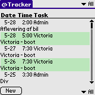
In the lower right corner you have a filter drop down:
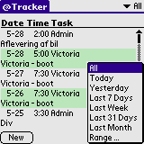
By selecting one of the entries you limit what is shown in the Main Task view. There are 7 predefined filters:
You can define a filter using the Range... entry.
By tapping the New button in the lower left corner or by selecting a task in the Main Task view you bring up the Edit screen:
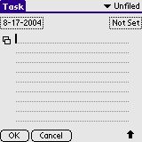 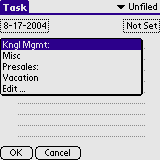
In the upper left corner you can set the date of the task. This will always default to todays date if a new Task is created. In the upper right corner (below the line) you can set the duration of/time spent in the task. Enter a description in the Task field. As much as possible of this description will be shown in the Main Task view. Finally, place the Task in the right category by using the category selector in the upper right corner (above the line).
Tap the little double note icon to the left of the Task text field. This will popup a list with pre-defined Short Texts or Quick Texts. Select a Quick Text from the list and the Quick Text will be transferred to the Task text field. Select Edit ... at the bottom of the list to go to the Quick Text Manager.
To start the Quick Text Manager select the Options->Quick Text menu item:
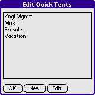
Click New to create a new Quick Text. Select a Quick Text and click Edit to edit the selected Quick Text. Click OK when done.
You can define up to 16 Quick Texts each of 31 characters.
From the Actions menu you have the choice of:
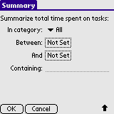
Define one or all of the options. Enter any search string (word or part of a word) in the Containing field to summarize based on content. By pressing OK a summary of the time spent in the tasks matching the criteria will be shown.
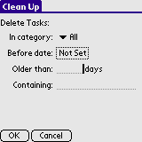
This works much the same way as the Summary screen above. Tasks will be permanently deleted when pressing OK.
Whenever you like, you can archive some (or all) of the entries in the Main Task view. Maybe a project was finished and now you want to get rid of the Tasks associated with that project.
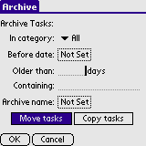
This dialog behaves much the same as the Summary and Clean Up dialogs above. Select Archive name to bring up the Archive Manager to select or add archives. Select Move Tasks to move tasks to the archive. If Copy Tasks is selected, the matching Tasks are copied to the archive. Press OK to start archiving.
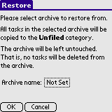
The Tasks within the selected archive will be restored to the Unfiled category. This is by design and will probably not be changed.
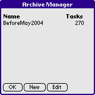
Using the Archive Manager you can add archives, delete archives, rename archives and so forth.
To convert the archive files you can f.ex. use the @Tracker Web Export tool.
You can setup some personal settings by selecting the Options->Preferences menu item:
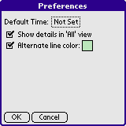
Note! Depending on the capabilites of your device not all of these settings might be shown.
So .. Tasks, Projects, Categories - a lot of terms without context. This is how I use @Tracker. I am a consultant at a large IT Company. I have to track the time spent on the various assignments. Once in a while (preferably once a week) I enter the time in a central time tracking utility.
The time I enter is among other things used to evaluate me and forms the basis for the bills shipped to my clients so the data entered needs to be pretty precise. And this is where it normally fails - performing my job on a client site (on a clients premises) normally means that I do not have a connection back to my employer (and the central time tracking utility). So time spent was previously recorded on scrap paper, in notepad, added to the calender on my cellular or whatever (and .. mind you, 3 weeks after a task was done it is pretty hard to remember the details when you have no notes to lean upon :-)
I add any new Project to the Category list. Work done on the Project, that is the individual Task, is recorded and placed in the category for that Project.
Come time when I have to enter the time in the central time tracking utility I browse the All category, entering the date and duration of the task and any special notes I might have entered.
When a project is finished, I archive the category and HotSync the archive to my desktop PC. On the desktop PC I use tttxexport [4] to export the archive to Excel CSV. Then I backup the Excel CSV file to a permanent storage.
Once in a while my manager calls me up asking me to give a summary of the time spent on various jobs/task in a Project. Well, easy, just bring up the Summary screen ...